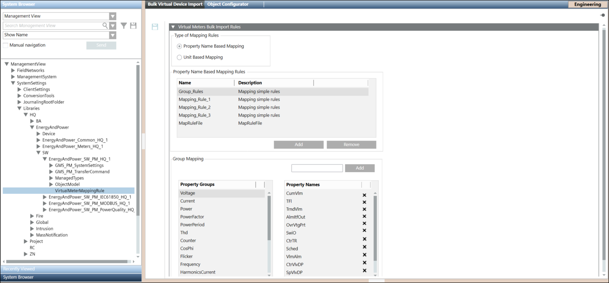
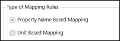
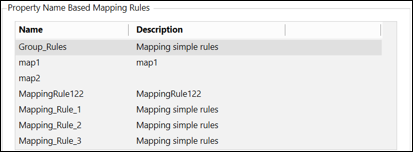
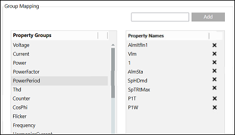

Virtual Devices Bulk Import Rules Expander
The Virtual Devices Bulk Import Rules expander provides options to define property mapping rules for mapping the system browser node with Powermanager devices. Mapping rules are of two types, Property Name Based Mapping and Unit Based Mapping. To create a rule mapping file for property name based rules, using scrollbar select the property group and drag-and-drop the system browser node on the selected property group. To create a rule mapping file for unit based rules, using scrollbar select the property group and add a unit to map it with the selected property group.

The property name based or unit based mapping file is then listed in the Property mapping rule section of the Hierarchical Data Mapping and Delimeter Separated Data Mapping expanders on selecting the Name based or Unit based options.
Type of Mapping Rules

Specify the type of mapping rule (property name based or unit based) to be created.
Property Name Based Mapping Rules

Displays a list of property name based or unit based mapping rule files. You can add a new file or remove an existing file using Add and Remove.
Group Mapping

For property name based rules System Browser nodes are mapped with a property group. For unit based rules, the units are mapped with a property group. Add is used to map units with property groups. On selecting a property group the mapped nodes or units display to the right.
You can delete or remove the property names from the list using the cross symbol on the right side.